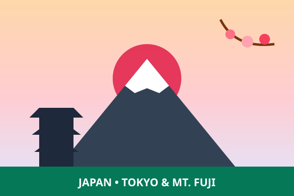
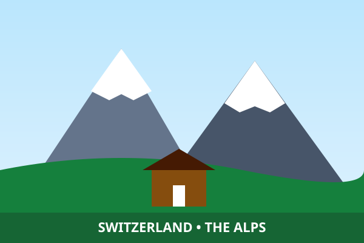
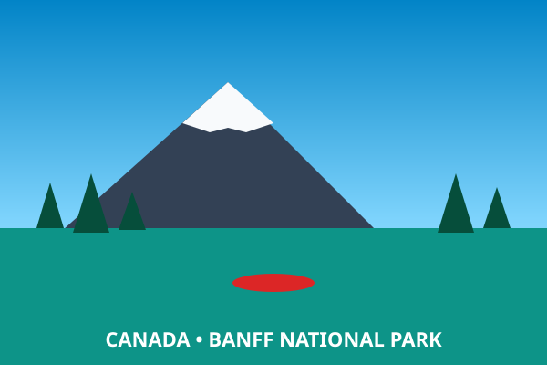
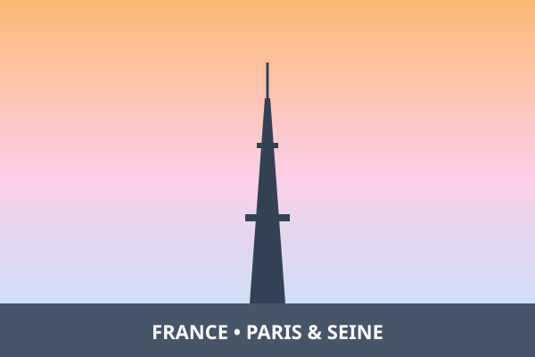

Four Vertically Arranged Travel Destination Cards
Four vertical destination cards each containing an image, heading, and description.

1. Tokyo & Mount Fuji, Japan
A breathtaking convergence of ancient shrines, cherry blossoms, and futuristic robotics laboratories. Scholars trek the snow trails of Mount Fuji and study AI advancements in Tokyo.

2. The Alps & Geneva, Switzerland
Towering snow peaks, pristine glacial valleys, and the home of particle physics at CERN. Ideal for alpine high-altitude hiking, sensory telemetry, and clean energy studies.

3. Banff National Park, Canada
Emerald glacial lakes surrounded by the majestic Canadian Rockies. A world-class venue for outdoor canoe expeditions, nature photography, and dark-sky astronomy research.

4. Paris & the Seine Boulevard, France
Historical architectural monuments, renowned museums, and European cultural summits. Provides inspiring venues for architectural drone videography and digital heritage mapping.